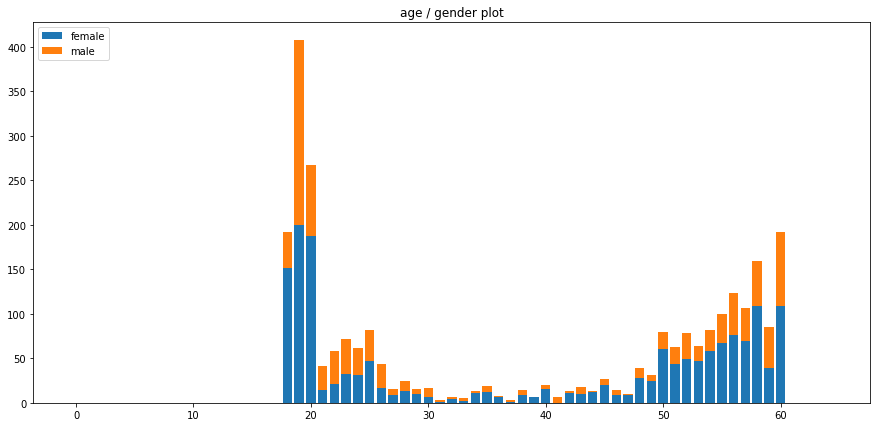
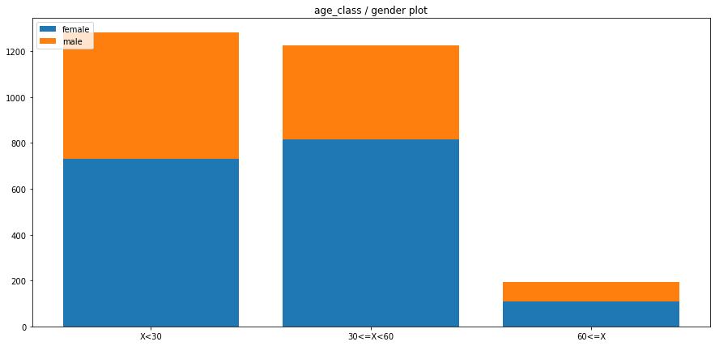
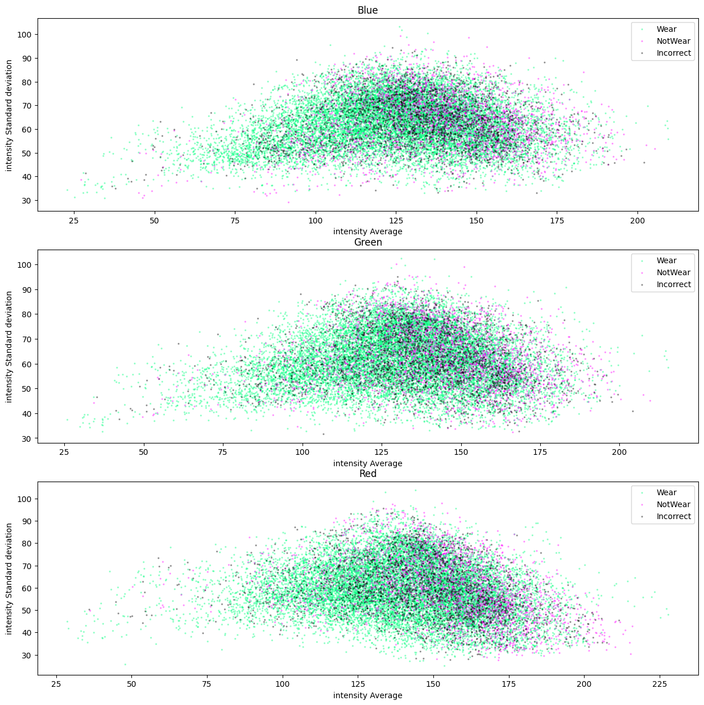
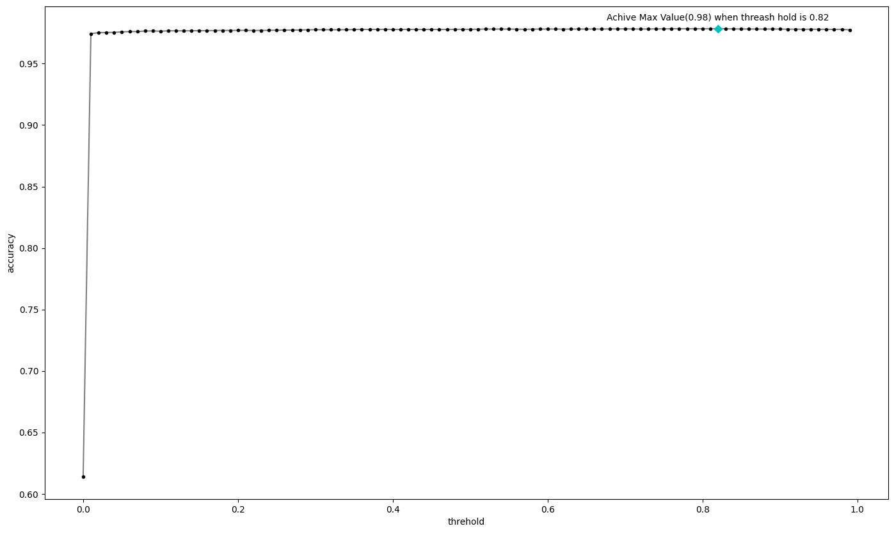

- Problem Definition
- Simple ML Flow
- Competition Flow
- EDA(Exploratory Data Analysis, 탐색적 데이터 분석)
- AI Stages VS Code에서 원격으로 작업하기
Problem Definition
- 내가 지금 풀어야 할 문제가 무엇인가?
- 이 문제의 Inpit과 Output은 무엇인가?
- 이 솔루션은 어디서 어떻게 사용되어지는가?
내가 풀어야 할 문제에 대해서 Define을 해야 본질에 집중할 수 있음.
Simple ML Flow
Domain understanding
→ Data mining → Data analysis → Data processing
→ Modeling → Training → Deploy
Competition Flow
Domain understanding
→ Data analysis → Data processing
→ Modeling → Training
EDA(Exploratory Data Analysis, 탐색적 데이터 분석)
Exploratory data analysis - Wikipedia
In statistics, exploratory data analysis (EDA) is an approach of analyzing data sets to summarize their main characteristics, often using statistical graphics and other data visualization methods.
https://en.wikipedia.org/wiki/Exploratory_data_analysis
통계학에서 EDA는 통계 그래픽 및 기타 데이터 시각화 방법을 사용하여 Dataset을 분석하여 주요 특성을 요약하는 접근 방식.
AI Stages VS Code에서 원격으로 작업하기
웹기반으로 주피터 노트북을 사용하는 것은 개인적으로 불편함을 많이 느껴서 VS Code로 작업할 수 있는 방법을 찾아보았고, 요약한 내용을 정리
-
SSH로 접속
- https://stages.ai/ 접속, 자신의 대회에서 서버탭 클릭
- 자신의 서버 정보칸을 보면 SSH로 접근 시 필요한 명령어가 적혀 있음, 복사
- ex)
ssh -i ./key root@101.101.217.87 -p 2231
- ex)
- AI Stages 경진대회 참여 가이드를 참조하여 key파일 설정
- CLI로 진행해야하며,
chmode 0600 [key path]를 입력해야 함 - ex)
chmod 0600 ./key
- CLI로 진행해야하며,
- 노트북 생성 시 받은 key 파일을 .ssh 폴더에 넣기
- windows : c:/users/[user-name]/.ssh/
- mac : /Users/[user-name]/.ssh/
- VS Code 실행
- 좌측에 원격 탐색기 아이콘 클릭
- 상단에 콤보박스를
ssh 대상으로 변경 -
- 버튼 클릭
- 상단에 나타난 TextBox에 ssh값 입력
- ex)
ssh -i ./key root@101.101.217.87 -p 2231
- ex)
- 접속 완료
-
Passowrd로 접속
-
https://stages.ai/ 접속, 자신의 대회에서 서버탭 클릭
-
노트북 접속 아이콘 클릭, 첫 화면에서 “Terminal” 클릭
-
passwd root입력, 이후 본인이 사용하고 싶은 password 입력 -
자신의 서버 정보칸을 보면 SSH로 접근 시 필요한 명령어가 적혀 있음, 복사
- ex)
ssh -i ./key root@101.101.217.87 -p 2231
- ex)
-
VS Code 실행
-
좌측에 원격 탐색기 아이콘 클릭
-
상단에 콤보박스를
ssh 대상으로 변경 -
- 버튼 클릭
-
상단에 나타난 TextBox에 ssh값 입력
- ex)
ssh -i ./key root@101.101.217.87 -p 2231
- ex)
-
password 입력
-
접속 완료
-
Window 10 OpenSSH 서버 활성화 및 실행하기
OpenSSH 서버 실행하고 SSH로 접속하는 방법
Linux 서버는 원격에서 SSH 프로토콜로 사용하는 게 일반적입니다.
https://www.lainyzine.com/ko/article/how-to-run-openssh-server-and-connect-with-ssh-on-windows-10/
OpenSSH Server 활성화
Add-WindowsCapability -Online -Name OpenSSH.Server~~~~0.0.1.0-
출력
Path :
Online : True
RestartNeeded : False
OpenSSH Server 실행
Start-Service sshd부팅 시점에 자동으로 서비스가 실행되도록 설정
Set-Service -Name sshd -StartupType 'Automatic'동작 확인
Get-NetFirewallRule -Name OpenSSH-Server-In-TCP-
출력
Name : OpenSSH-Server-In-TCP
DisplayName : OpenSSH SSH Server (sshd)
Description : Inbound rule for OpenSSH SSH Server (sshd)
DisplayGroup : OpenSSH Server
Group : OpenSSH Server
==Enabled : True ← True일 경우 정상==
Profile : Any
Platform : {}
Direction : Inbound
Action : Allow
EdgeTraversalPolicy : Block
LooseSourceMapping : False
LocalOnlyMapping : False
Owner :
PrimaryStatus : OK
Status : 저장소에서 규칙을 구문 분석했습니다. (65536)
EnforcementStatus : NotApplicable
PolicyStoreSource : PersistentStore
PolicyStoreSourceType : Local
AI Stages - 마스크 착용 상태 분류 대회
연령별 남녀 성비 시각화

Dataset - 연령별 남녀 성비 시각화
Daycon에서 이미지 분류 대회에 참가했을 때, 특정 라벨에 대한 데이터가 적은 경우, 그 라벨은 성능을 얻기 힘들었습니다. 따라서 데이터 분포를 알아보기 위해 연령별 남녀비율을 시각화 했습니다. 21~49세의 데이터는 적어보입니다.

연령 구간별 남녀 성비 시각화
대회에서 원하는 실제 분류는 [30세 미만 / 30세 이상 ~ 60세 미만 / 60세 이상]입니다. 분류에 따라 다시 시각화 했습니다. 분류해야하는 구간에 맞춰 다시 시각각화를 해보니 오히려 60세 이상의 데이터가 상대적으로 부족합니다.
시각화 결과, 알게된 것은 아래와 같습니다.
-
전반적으로 여성에 대한 데이터가 많다.
-
60세 이상에 대한 데이터가 적다.
얼굴 검출 시도
필요한 정보만 제공할 수 있으면 AI도 당연히 성능이 올라갈 수 밖에 없습니다.
Dataset의 이미지에서 얼굴 영역(ROI)만 따로 검출해서 넘겨줄 수 있다면 훨신 의미있는 결과를 얻을 수 있을 것입니다.
하지만 HarrCascade로 검출해본 결과, 100개의 샘플링 데이터에서 50%의 검출률을 보였습니다.
(데이터셋 이미지의 공개는 저작권에 접촉되므로 결과이미지 공개 불가)
경향을 보니 우선 마스크의 색이 제각각이고, 영상 내 얼굴크기의 편차가 심했습니다.
전통적인 방법으로 얼굴 영역를 검출하는 것은 어렵다고 판단했습니다.
이미지 RGB 분포

Image를 R, G, B 채널별로 나누어 각각 mean과 std를 구한 뒤, Mask착용 유무로 색상을 달리하여 각각 표현해본 plot
마스크 착용 유무에 따라서 분포가 다르기를 기대했지만, 아쉽게도 크게 차이가 없었다.
훈련을 위한 전처리
훈련을 위해 데이터 전 처리를 수행해야 했다.
csv파일에 있는 [path] column의 경로는 이미지 경로가 아니라 폴더의 경로였다.
폴더 내부에는 한 사람이 여러 종류의 마스크를 끼거나, 아에 안끼는 등 다양한 Case로 7장의 이미지가 존재했다.
-
데이터 포맷
id,gender,race,age,path 000001,female,Asian,45,000001_female_Asian_45 000002,female,Asian,52,000002_female_Asian_52 000004,male,Asian,54,000004_male_Asian_54
이것을 더 편하게 사용하기 위해 아래와 같이 노트북을 작성했다.
-
Code
# DataMaker 이 노트북은 train.csv를 읽어서 훈련에 유용한 형태로 변환하여 저장합니다. ## Import import os import numpy as np import pandas as pd import argparse import sys from tqdm import tqdm sys.path.append('../') # import를 위해 경로추가 from utils import Utility as U ## Args parser = argparse.ArgumentParser() parser.add_argument('--path_train', type=str, default="./data/train/") parser.add_argument('--path_eval', type=str, default="./data/eval/") parser.add_argument('--path_train_output', type=str, default="train_i.csv") parser.add_argument('--path_eval_output', type=str, default="eval_i.csv") args = parser.parse_args('') ## Load Data df_train = pd.read_csv(os.path.join(args.path_train, 'train.csv')) images = [] for path in df_train['path']: __path_folder = os.path.join(*[args.path_train, 'images', path]) __path_image = [os.path.join(*[__path_folder, p]) for p in os.listdir(__path_folder) if p[0] != '.' ] images.append(__path_image) df_train['images'] = images df_train.head() df_eval = pd.read_csv(os.path.join(args.path_eval, 'info.csv')) images = [os.path.join(*[args.path_eval, 'images', p]) for p in df_eval['ImageID']] df_eval['images'] = images df_eval.head() ## Make Data image_df_labels = ['id', 'gender', 'age', 'mask', 'path'] image_df_rows = [] for _id, (_gender, _age, _images) in enumerate(zip(df_train['gender'], df_train['age'], df_train['images'])): for _path in _images: _mask = U.convertImagePathToMaskStatus(_path) image_df_rows.append( [_id, _gender, _age, _mask, _path]) image_df = pd.DataFrame(image_df_rows, columns=image_df_labels) image_df['gender_class'] = [U.encodeGender(g.capitalize()) for g in image_df['gender']] image_df['age_class'] = [U.encodeAge(a) for a in image_df['age']] image_df['mask_class'] = [U.encodeMask(m) for m in image_df['mask']] print('total number of images :', image_df.size / image_df.columns.size) image_df.sample(5) image_df.to_csv(args.path_train_output, index=False) df_eval.to_csv(args.path_eval_output, index=False) -
변환결과
id gender age mask path gender_class age_class mask_class 15649 2235 female 40 Incorrect ./data/train/images/005534_female_Asian_40/inc... 1 1 1 1060 151 female 58 Wear ./data/train/images/000527_female_Asian_58/mas... 1 1 0 12251 1750 male 60 NotWear ./data/train/images/004096_male_Asian_60/norma... 0 2 2 5282 754 female 58 Incorrect ./data/train/images/001492_female_Asian_58/inc... 1 1 1
작업 분담
작업분담에 대하여 피어 세션에서 팀원들과 의논한 결과는 아래와 같았다.
- 분류해야 하는 3개의 항목에 대하여 각각 모델을 나누어 작성
-
Gender 예측 모델 : 1명 (나)
-
Age 예측 모델 : 1명
-
Mask 예측 모델 : 1명
-
일반 예측 모델 : 2명
-
Git Repos 구성
최종 결과물은 git repos로 해야 한다. local로 작업하다 나중에 합치려고 하면 매우 골치아프고, 애초에 그냥 git기반으로 개발하는 것이 편하기도 해서 바로 구성했다.
Gender prediction
Gender 예측을 위해 notebook을 생성했다
Backbone은 ResNext와 Resnet152 Resnet101을 사용해서 각각 성능을 평가했다.
Parameter
Input image size : 244x244
Output image size : 1(Sigmoid)
Validation ratio of train dataset : 0.2
Epoch : 20
Batch size : 16
Learning rate : 4e-3
True - False threashold value : 0.5
결과, ResNext가 Accuracy가 가장 높았다.
Threashold value에 따른 Accuracy 확인

threashold 값에 따른 모델의 정확도를 보기 위해 각 값마다 inferrence된 값을 평가했다.
threashold를 0.82로 했을 때 최고 정확도를 얻는 수 있다는 것을 알 수 있었다.
Validation Dataset 평가
3개 항목(Mask Status, Age, Gender)를 한번에 예측한다면 제출해서 결과를 볼 수 있겠지만, 각 항목별로 나눠서 inferrence 하기로 했기 때문에 평가 방법이 없었다.
때문에 훈련 모델을 가져와서 inferrence 한 뒤, 그 결과를 원본이미지를 가지고 시각화해서 보는 방법을 취했다. 모든 이미지를 확인 할 수 없지만 100개정도의 이미지는 확인할 수 있으므로 모델이 잘 동작 하는지, 대략적인 정확도는 어떻게 되는지 추측할 수 있을 것이라고 판단했다.
결과, 어느정도 준수한 성능을 보여주고 있다는 것을 알 수 있었다.
pipenv + pytorch 사용(Windows)(X)
Pipenv + PyTorch 환경설정
간단하게 pytorch를 쓸 가상환경을 pipenv로 만들기 위한 작업입니다.
https://velog.io/@sihyeong671/Pipenv-PyTorch-환경설정
팀원분이 anaconda도 좋지만 pipenv도 편리하다고 추천해주셔서 pipenv로 구성을 시작했다.
프로젝트별로 환경이 나눠지기 때문에 패키지가 꼬일 일이 없어 편리하다.
ai stages에서 제공한 서버는 구성에 문제가 없었다.
==그러나 윈도우 환경에서는 정상적으로 환경구성이 되지 않았다. pipenv install ~로 설치가 안된다.
Window에서 뭔가를 하려고 하면 불편함이 너무 많다.
결론적으로, 2022년 10월 기준으로는 Windows + pipenv + pytorch는 구성에 실패했다.
Windows + WSL2 + docker + pipenv|anaconda
Docker: Accelerated, Containerized Application Development
Docker is a platform designed to help developers build, share, and run modern applications.
https://www.docker.com
Info
windows 기본 환경에서 pipenv와 pytorch를 사용하려던 계획이 무너졌고, 다른 방법을 모색했다.
이 과정을 통해 내 마음속에 발현한 한가지 생각은 환경 구성에 실패했을 시 손쉽게 버리고 다시 구축할 수 있다면 좋겠다는 생각을 하게 되었다.
시행착오를 거치며 만들어진 로컬 환경의 여러 pytorch, anaconda 찌꺼기들은 볼 때 마다 안타까움이..
그렇다면 방법은 당연히 docker 밖에 없었다. docker는 LXC(리눅스 컨테이너스)라는 커널 컨테이너 기술을 이용하여 만든 컨테이너 기술이다. VM처럼 OS까지 가상화하지 않기 때문에 가볍다.
작성일 기준 가장 높은 cuda stable 버전은 11.8이지만, docker hub에 있는 공식 PyTorch 이미지는 11.6이 최신이었다. 따라서 11.6버전으로 설치했다.(local cuda version이 11.8이어도 무방)
그 후 아래와 같은 명령어로 container를 생성했다.
docker pull pytorch/pytorch:1.13.0-cuda11.6-cudnn8-runtime
docker run -it --gpus all -p 8080:8080 --name mytorch -v repos-vol:/repos 1c9fb6f6f844-it
i = 컨테이너의 표준 입력(stdin)을 활성화
t = 리눅스에 키보드를 통해 표준 입력(stdin)을 전달할 수 있게한다
—gpus all
가상환경에서 모든 gpu의 사용을 가능하게 함
만약 특정 gpu만 사용할 수 있게 하고싶으면, 해당 gpu의 번호나 uuid를 all대신에 넘겨주면 된다
-p 8080:22
로컬의 port를 가상환경의 port로 mapping
ssh로 접근하기 위해 밖으로 22번 포트를 노출해줬다
—name mytorch
생성하려는 컨테이너의 이름
지정해주지 않으면 무작위로 생성된다
-v repos-vol:/repos
따로 만들어 놓은 volume을 가상환경에 마운트해준다
repository 설정 시 git 정보 초기화(name, mail) 및 clone과 token 발생 등을 해야하기 때문에
따로 volume을 만들어서 설정해 놓으면 편리하다. 나중에 가상환경 구성에 실패해서 처음부터 다시 하더라도 ‘가상 환경 설정’만 다시할 수 있게 된다
1c9fb6f6f844
contrainer 생성에 사용할 image의 id
내 경우, [pytorch/pytorch:1.13.0-cuda11.6-cudnn8-runtime]의 id를 의미한다
우선 Docker로 환경을 구성하고 나면 그 이후에는 anaconda를 사용하던, pipenv를 사용하던 상관 없다.
단, PyTorch Docker 이미지는 기본적으로 anaconda의 base에 환경이 구성되어 있다.